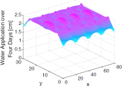
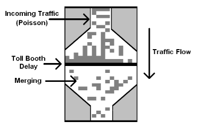
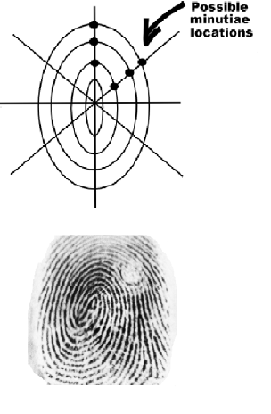

Publications, Notes, and Errata
Web interface for finite size corrections in membrane MD
Mathematical Contest in Modeling
Students studying mathematical modeling or planning on competing in the Mathematical Contest in Modeling might be interested in our guide to participating Conquering the Math Contest in Modeling [pdf]. Pascal Getreuer, Brad Klingenberg and I wrote this guide to the contest and mathematical modeling in general based on our experience with the MCM at CU-Boulder (2004-2006). This is now quite out of date, but might still be useful to potential teams and can give a flavor of the competition. Edited versions of these competition papers were published in The UMAP Journal:
|  | Sprinkle, Sprinkle, Little Yard [MCM paper: optimization of sprinkler placement]B.A. Camley*, B. Klingenberg*, and P. Getreuer*, The UMAP Journal 2006 |
|  | For Whom the Booth Tolls [MCM paper: traffic dynamics in a tollbooth plaza]B.A. Camley*, B. Klingenberg*, and P. Getreuer*, The UMAP Journal 2005 |
|  | Not such a small whorl after all [MCM paper: modeling fingerprint identification]B.A. Camley*, B. Klingenberg*, and P. Getreuer*, The UMAP Journal 2004 |
* = alphabetical order of authors